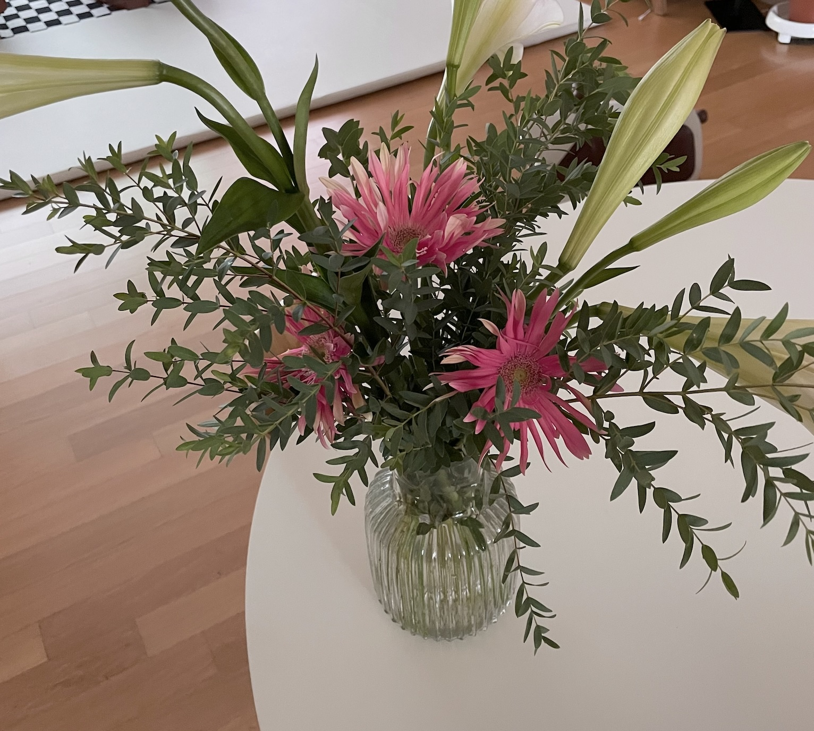
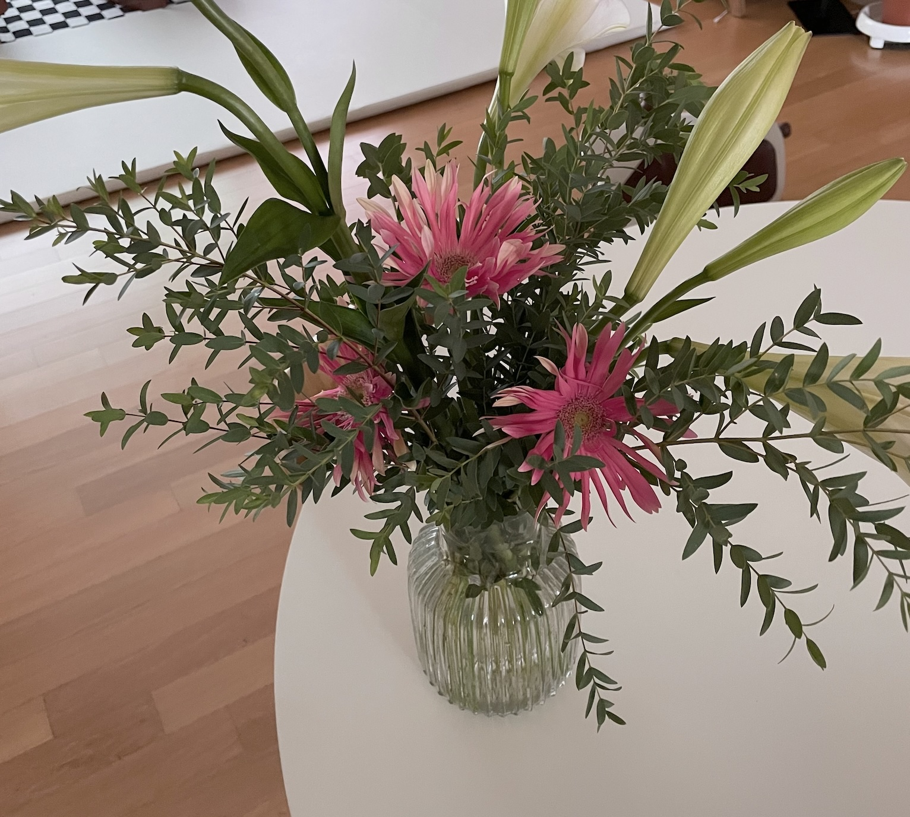

백엔드 10기의 과제만들기
HTML
안녕하세요 ! 저는 백엔드 공부를 하고 있는 이소영이라고 합니다.
열심히 하다보면 뭐라도 될 수 있겠지라는 생각으로 임하고 있습니다.
저는 부산에서 출생했고, 독서
를 좋아하며, 이너뷰티
에 관심이 많습니다.
보이지 않는 것을 가꾸며 내면의 성장에 집중하는 것을 좋아합니다.
종교는 불교이고, 최근 1년간 명리학 공부를 통해 인생의 신비로움을 느끼기도 했습니다.
그리고 외국어 공부와 여행을 좋아합니다.
말수는 많이 없는 편입니다. 주변에서 기운이 빠져서 조용한 것을 내향적일것이다 생각하는 경향이 있는데, 그것도 맞습니다..
대체적으로 정적인 활동을 좋아합니다.
저의 mbti는 INTJ입니다. 사실 정확하진 않습니다 .. 그냥 써 본 거예요. 꽃을 좋아해요! 자주 사와서 꽂아두고 사진도 많이 찍고, 그림 그리는 것도 좋아합니다! 이건 확실히 제 취미입니다.즐겨보는 프로그램은 용감한 형사들 입니다. 잘 부탁드립니다!